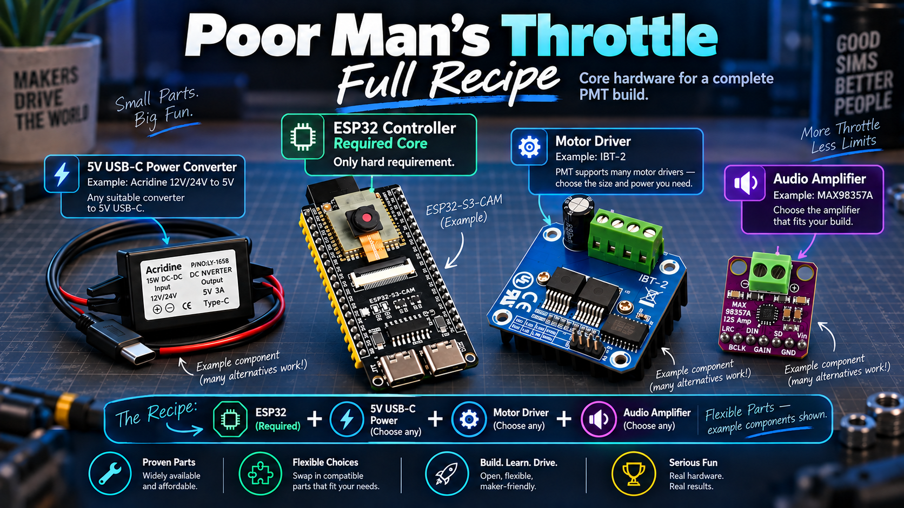
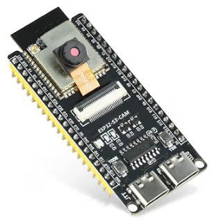
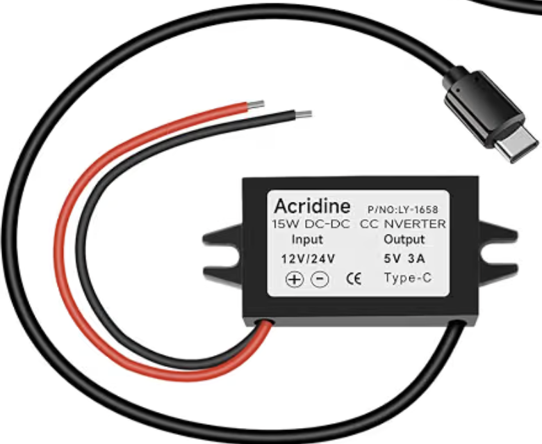
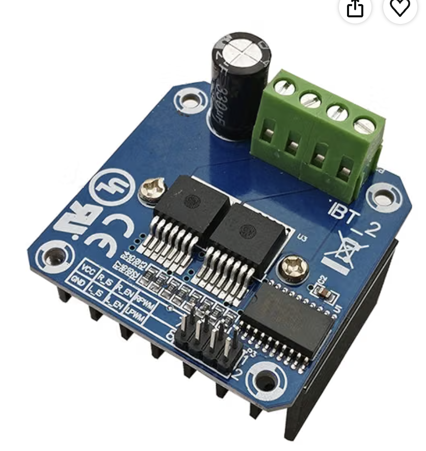
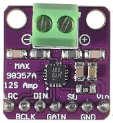
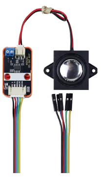
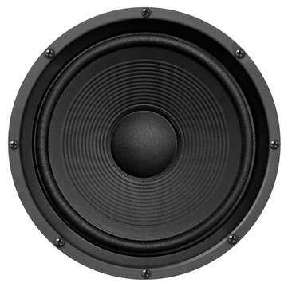

ESP32-S3-N16R8
A strong choice when you want maximum memory headroom for a full-featured build, especially when combining throttle control, audio, and other advanced PMT capabilities.
PMT is intentionally flexible: the ESP32 is the core requirement, while power conversion, motor control, and audio can be matched to the size, power, and layout you are building.

Start with the Base PMT Installation for control, power, and motor drive. Then add the Optional Audio Addition when you want locomotive sound. Specific brands are not required; choose compatible parts that fit your locomotive, current needs, available space, and budget.
The ESP32 is the brains of the base Poor Man's Throttle installation. For new builds, the S3 family gives you the most headroom for modern PMT features while keeping the base hardware target around $21 total.

A strong choice when you want maximum memory headroom for a full-featured build, especially when combining throttle control, audio, and other advanced PMT capabilities.
Another supported S3 option with plenty of capability for PMT. Choose between N8R8 and N16R8 based on availability, price, and the amount of storage headroom you want.
An example of an all-in-one ESP32-S3 camera board using an ESP32-S3-WROOM N16R8 module and dual USB-C interfaces. This is an example, not a required brand or exact model.
Link to product on Amazon ↗Your locomotive or layout may provide 12V or 24V, but the ESP32 needs an appropriate 5V supply. A compact DC-DC buck converter makes that conversion easy.

Example specification: DC 12V/24V to 5V USB-C, 3A / 15W Type-C output. The exact brand is not important; use a reliable converter with the correct input range and enough output current for your build.
This is where PMT's flexibility really pays off. Choose the driver based on motor current, physical size, voltage, and the locomotive or accessory you are powering.

PMT supports a wide variety of common motor-driver control styles. An IBT-2 / BTS7960 is one example for higher-current applications, but smaller drivers can be used when space and current requirements are lower.
The important decision is not the logo on the board — it is choosing a driver with the right electrical capacity and control interface for your build.
Link to product on Amazon ↗Audio is an optional add-on to the base PMT installation. For about $4 in additional hardware, an I2S amplifier and speaker turn the ESP32's digital audio stream into real locomotive sound.


MAX98357A-style I2S mono amplifier boards are compact, inexpensive, and well suited to embedded locomotive audio. A roughly 4W amplifier driving a 4Ω or 8Ω speaker can deliver plenty of volume in a locomotive-sized installation. You are not locked to one seller or brand — choose a compatible I2S amplifier that fits your speaker and installation.
To finish the sound upgrade, you will also need an 8Ω or 4Ω 5W speaker and a small micro SD flash card. A 128MB card is sufficient for the audio recipe.

The hardware cost stays easy to understand: roughly $21 for the base PMT installation, then about $4 more for the optional audio addition.
The base installation gives you the future-capable ESP32-S3, 5V power conversion, and motor-driver hardware needed to build a complete Poor Man's Throttle control system.
Add an I2S amplifier and speaker whenever you want audio. The sound hardware is an addition to the base PMT recipe, not a requirement for the throttle itself.
Once you have the hardware, use these two guides in order: build the base PMT installation first, then follow the audio guide only if you are adding sound.
Start here. This is the core installation guide for building and wiring the Poor Man's Throttle hardware, including the controller, power, and motor-drive side of the system.
↗ Optional Audio AdditionUse this after the base PMT installation when you want to add locomotive sound. It covers the audio hardware, amplifier, speaker, and PMT audio setup.